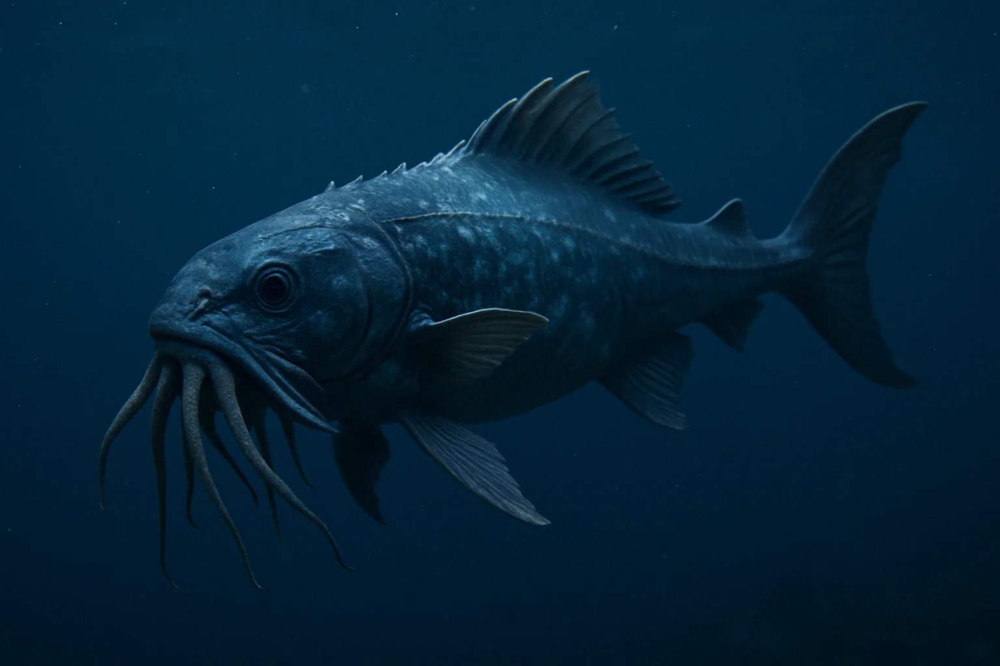
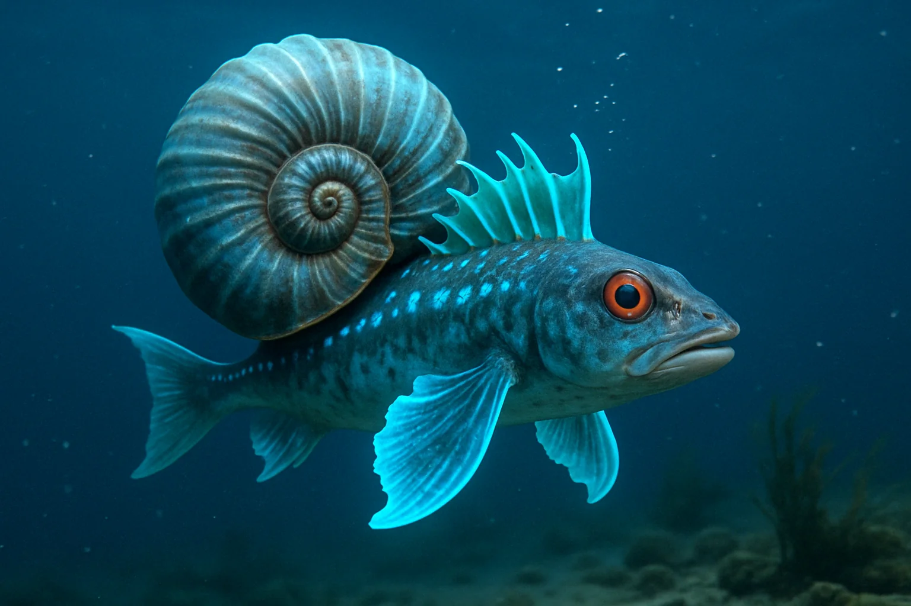
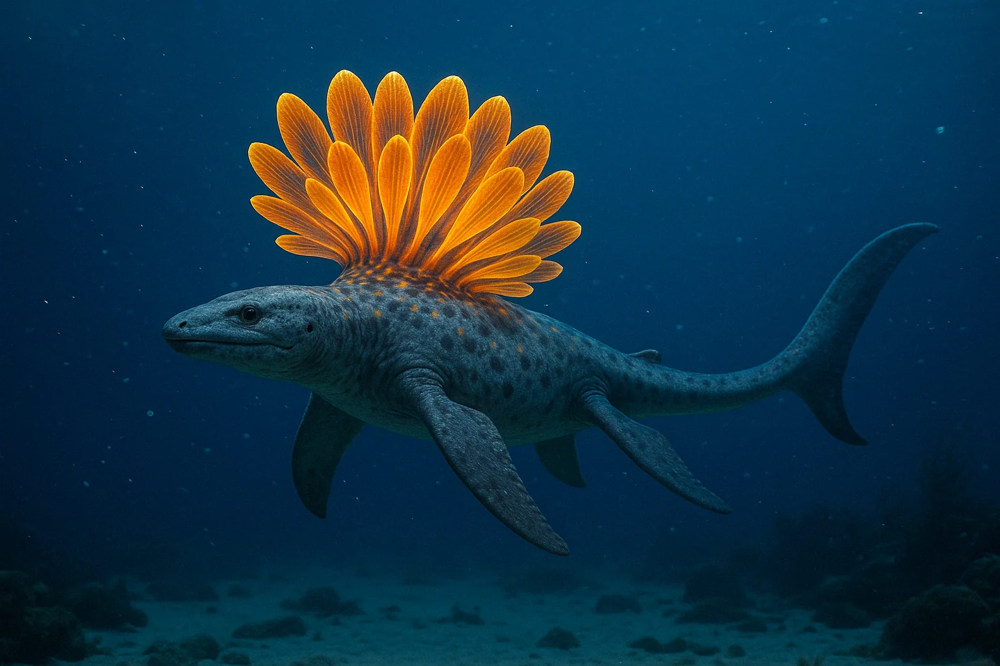
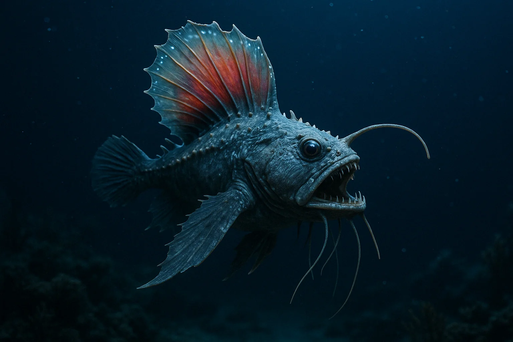

Text copied
Features:
• Possesses tentacle-like appendages around its mouth for detecting and capturing prey even in near-total darkness. • Its scales emit a faint bioluminescent glow, helping to lure in unsuspecting prey. • An extremely agile predator, capable of making sudden bursts of speed to catch its target.
Interesting Fact:
The Abyssal Tentafish can change the shade of its glow to blend with surrounding seaweed, luring prey directly into its waiting tentacles!

Name: Abyssal Tentafish
Habitat Depth: 400–600 meters
Diet: Small fish, squids, crustaceans

Name: Spiralis Piscis
Habitat Depth: 600–900 meters
Diet: Small crustaceans, plankton, larval sea creatures
Features:
• Has a protective spiral shell resembling an ancient ammonite. • Its glowing fins emit soft blue light to scare off predators.
Interesting Fact:
Spiralis Piscis can curl into a spiral and quickly roll along the seafloor to escape threats!
Features:
• Grows bright, golden glowing "petals" on its back to attract prey. • Its body is flexible and fast, allowing sharp turns in the darkness.
Interesting Fact:
When attacked, Luminocetus Radiatus flashes a blinding light and swiftly changes direction, leaving predators confused.

Name: Luminocetus Radiatus
Habitat Depth: 700–1000 meters
Diet: Medium-sized fish, squids

Name: Abyssodraco Ferox
Habitat Depth: 1500–2500 meters
Diet: Omnivorous — eats anything it can catch: fish, shrimp, small squids
Features:
• Equipped with sharp teeth and long sensory whiskers to detect movement in total darkness. • Its dorsal fin glows faint red, luring prey into its deadly trap.
Interesting Fact:
Abyssodraco Ferox can survive for months without food thanks to its slow metabolism and expandable stomach.
Catalogue
Current Depth

Venospina Ferrata

Name: Venospina Ferrata
Habitat Depth: 100–300 meters
Diet: Small fish, crustaceans, jellyfish
Puffonella lumae

Name: Puffonella lumae
Habitat Depth: 200–500 meters
Diet: Microscopic organisms, bioluminescent plankton
Helicocris Vortema

Name: Helicocris Vortema
Habitat Depth: 300–700 meters
Diet: Small fish, deep-sea worms, translucent mollusks
Abyssal Tentafish

Name: Abyssal Tentafish
Habitat Depth: 400–600 meters
Diet: Small fish, squids, crustaceans
Thalassoraptor Rex

Name: Thalassoraptor Rex
Habitat Depth: 500–800 meters
Diet: Large fish, cephalopods, marine reptiles
Spiralis Piscis

Name: Spiralis Piscis
Habitat Depth: 600–900 meters
Diet: Small crustaceans, plankton, larval sea creatures
Luminocetus Radiatus

Name: Luminocetus Radiatus
Habitat Depth: 700–1000 meters
Diet: Medium-sized fish, squids
Medustigma Noctilucens

Name: Medustigma Noctilucens
Habitat Depth: 700–1400 meters
Diet: Microscopic plankton, small fish, and crustaceans
Gravimorax Abyssus

Name: Gravimorax Abyssus
Habitat Depth: 800–1200 meters
Diet: Detritus, deep-sea fish, slow crustaceans
Abyssodraco Ferox

Name: Abyssodraco Ferox
Habitat Depth: 1500–2500 meters
Diet: Omnivorous — eats anything it can catch: fish, shrimp, small squids
Top 5 Most DangerousCreatures of the Deep
1. Abyssodraco Ferox
With its sensory precision, deceptive glowing lure, and ability to survive long starvation periods, Abyssodraco Ferox is an apex opportunist. Its mix of ambush tactics, extreme resilience, and total adaptability make it one of the most dangerous and unpredictable predators of the deep ocean.
2. Thalassoraptor Rex
With its immense size, stealth approach, and razor-sharp teeth, Thalassoraptor Rex poses a serious threat to any marine creature within its range. Its ability to launch high-speed surprise attacks and its endurance in long chases make it one of the ocean's most formidable predators.
3. Venospina Ferrata
Unlike most predators that rely on brute force or deception, Venospina Ferrata is a precision killer. One sting is all it takes. It doesn’t chase — it intercepts. It doesn’t wrestle — it paralyzes. If you feel a sudden sting in shallow twilight waters, it’s probably already too late.
4. Medustigma Noctilucens
Deceptively slow but lethally efficient, Medustigma Noctilucens uses its near-invisible tentacles and paralytic venom to silently eliminate unsuspecting prey. Its ability to disorient attackers with a flash of bioluminescence makes it a hidden threat in the deep sea.
5. Luminocetus Radiatus
Deceptively slow but lethally efficient, Medustigma Noctilucens uses its near-invisible tentacles and paralytic venom to silently eliminate unsuspecting prey. Its ability to disorient attackers with a flash of bioluminescence makes it a hidden threat in the deep sea.